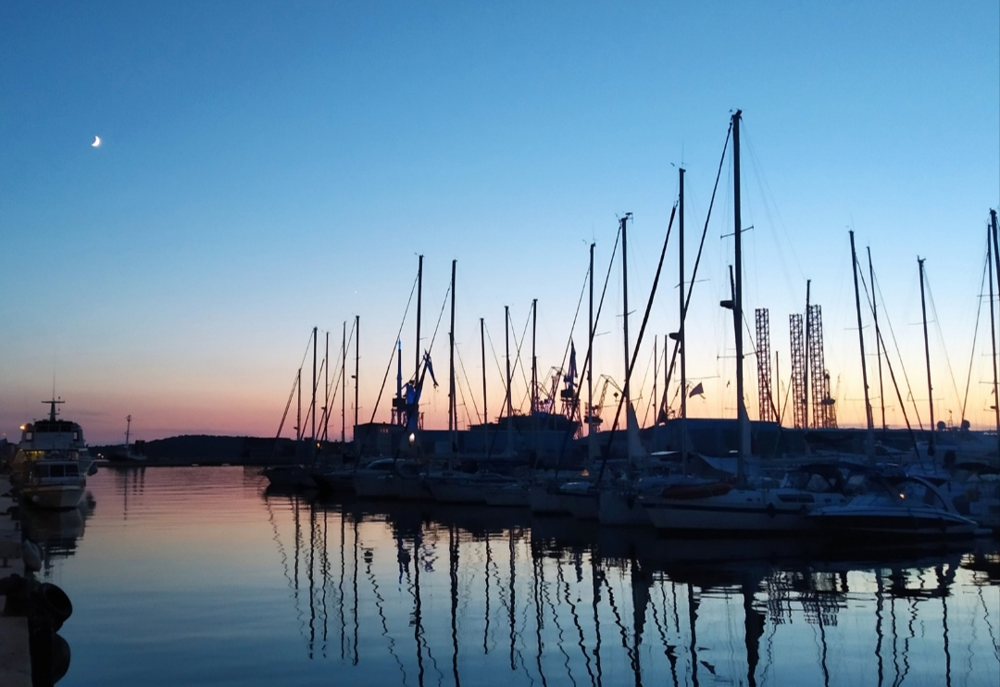
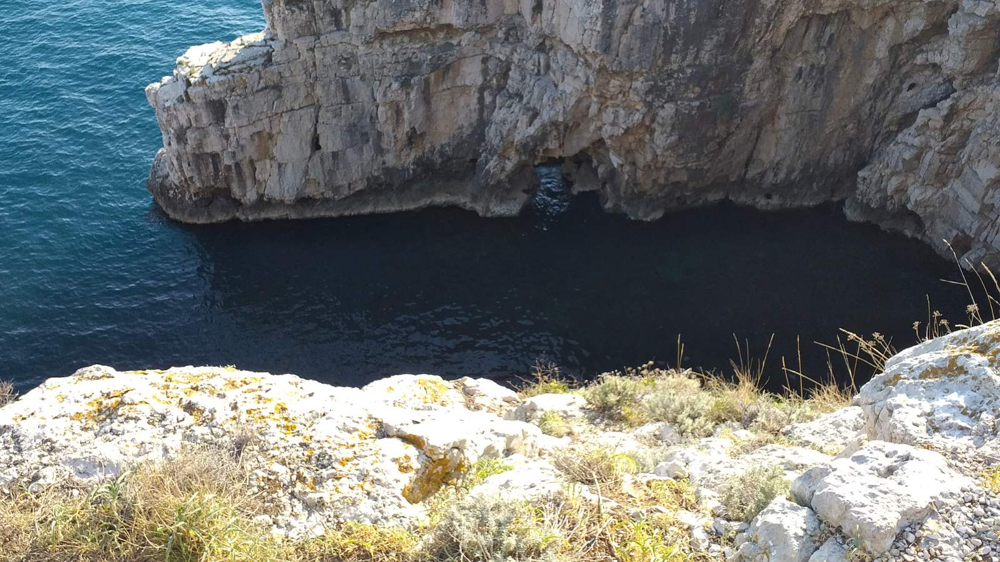
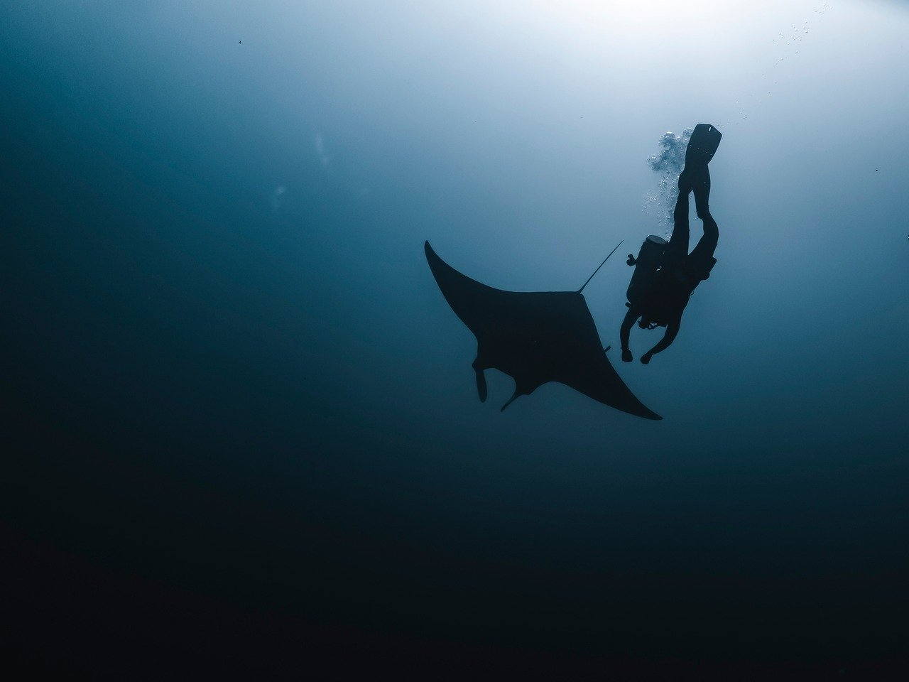

50 € felnőttenként
50 € felnőttenként
Pula · Isztria · Horvátország
Ismerje meg Isztriát a tenger felől
Hajózzon a Brioni-szigetek körül, fürödjön a Szent Jeromos-sziget mellett, vagy élvezze az esti fényeket delfinek társaságában. Minden túrához étkezés és korlátlan italfogyasztás jár, felnőtteknek már 50 €-tól.
24 órán belül válaszolunk
- Indulás a pulai Rivától
- Étkezés és korlátlan italfogyasztás a fedélzeten
- 3 év alatti gyermekek ingyen utaznak
- A házi kedvenceket is szívesen látjuk
Nem tudja, melyik túrát válassza?
Induljon ki abból, mit vár a naptól.
Pulai hajótúráink
Az árak személyenként értendők. Minden túra a Rivától indul.
50 € felnőttenként 50 € felnőttenként
50 € felnőttenkéntNaplemente & delfinek
Részletek: Naplemente & delfinek 50 € személyenként
50 € személyenkéntRovinj & Vrsar
Részletek: Rovinj & Vrsar 85 €-tól személyenként
85 €-tól személyenkéntEgynapos velencei kirándulás
Részletek: Egynapos velencei kirándulásMiért foglaljon a Try Istriánál
01
Közvetlenül és helyben
Azokkal az emberekkel áll kapcsolatban, akik a kirándulásokat tervezik és vezetik, nem pedig viszonteladók hosszú láncával.
02
Egyetlen üzenet elég mindenhez
Egy nap a vízen, egy bérelt hajó, egy kajakos reggel és a szállás is egyetlen beszélgetésben megbeszélhető.
03
Világos feltételek
Az időpontok, az árak és az árban foglalt szolgáltatások minden oldalon szerepelnek. Ha valami nem világos, kérdezzen: egy napon belül válaszolunk.
A túrákon túl

ApartmanokPula és Fažana

BungalóCsendes zug a Veruda marina közelében

JachtbérlésPrivát, kapitánnyal

HajóbérlésHajóvezetői engedéllyel vagy anélkül

KajakÖblök, sziklafalak és barlangok

BarlangfürdőzésKis hajóval

BúvárkodásVezetett privát merülések

Brioni-szigetekNemzeti park a tenger felől
Hat látnivaló Isztriában, amelyre érdemes időt szánni
Rövid lista az első látogatáshoz.
A pulai Aréna
Az első századból származó római amfiteátrum, hajóink indulási helyétől néhány percnyi sétára.
Rovinj
Dombra épült óváros, amelyet Szent Eufémia harangtornya koronáz. Hajóval látogatjuk meg.
Kamenjak-fok
A félsziget déli csúcsa: sziklás öblök, tiszta víz és alig néhány épület.
Fažana
Csendes halászváros a Brioni-szigetekkel szemben, ahonnan a nemzeti parki hajók indulnak.
Poreč
Itt áll a bizánci mozaikjairól híres Euphrasius-bazilika.
Lim-öböl
Hosszú, keskeny, erdővel szegélyezett tengeröböl, Pulától mintegy 40 percre északra.
Apróságok, amelyektől szebb lesz a nap
01
A naplementés túrát foglalja először
Júliusban és augusztusban erre fogynak el leghamarabb a helyek.
02
Érkezzen 30 perccel korábban
Így sietség nélkül választhat helyet a fedélzeten.
03
Készüljön a napra
Kalap, napvédő krém és törölköző. A naplementés túrára vigyen magával egy könnyű kabátot is.
04
Parkoljon az Aréna mellett
Fizetős parkoló, onnan rövid, sík úton érhető el a Riva.
Gyakran ismételt kérdések
Hogyan erősítik meg a foglalást?
Küldje el az időpontot, a túrát és a létszámot WhatsAppon, e-mailben vagy az űrlapon keresztül. Ellenőrizzük a szabad helyeket, és 24 órán belül válaszolunk: egyetlen üzenetben megkapja a találkozási pontot, az időpontot és azt, hogy mit vigyen magával.
Megoldható a nappali és a naplementés túra ugyanazon a napon?
Igen. A nappali túra 16:30-kor ér vissza a Rivára, a naplementés túra pedig 18:00-kor indul, így marad idő egy zuhanyra és egy kávéra. Sok vendég inkább két napra osztja a két túrát.
Szerveznek privát kirándulásokat is?
Igen. Bérelhet hajót kapitánnyal vagy anélkül, kibérelhet egy jachtot, vagy lefoglalhatja a barlangfürdőzős túrát privát kirándulásként a saját csoportjának.
Mely kirándulások mennek túl a Brioni-szigeteken?
Az egész napos rovinji és vrsari, illetve velencei kirándulások, a déli sziklák mentén zajló barlangfürdőzős túra, a Kamenjak-fok körüli kajakozás és a Pula környéki vezetett merülések.
Milyen nyelveken írhatok Önöknek?
Angolul, németül, olaszul vagy horvátul. A Brioni-túrák idegenvezetői is több nyelven beszélnek.
Milyen messze van a Riva az óvárostól és az Arénától?
Az óváros része. A Riva az óváros vízpartja mentén húzódik, az Aréna pedig gyalog néhány percre van, így a hajók a központi szállodákból és apartmanokból is könnyen megközelíthetők.
Találjon ránk a Rivánál
Riva, 52100 Pula, az ACI Marina mellett. Kérjük, indulás előtt 30 perccel érkezzen meg. Az Aréna közelében fizetős parkoló található, ahonnan rövid, sík sétával ér ide.
Tervezze meg velünk az utazását
Írja meg az időpontokat, és hogy mit szeretne csinálni. Segítünk mindent összeállítani.